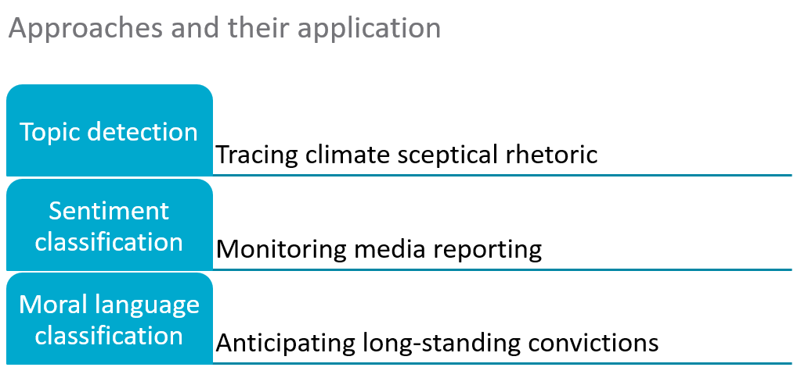
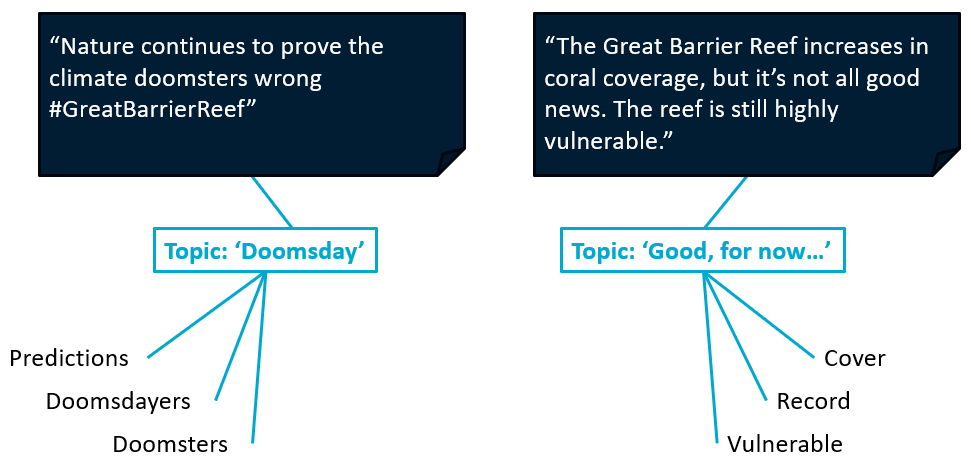
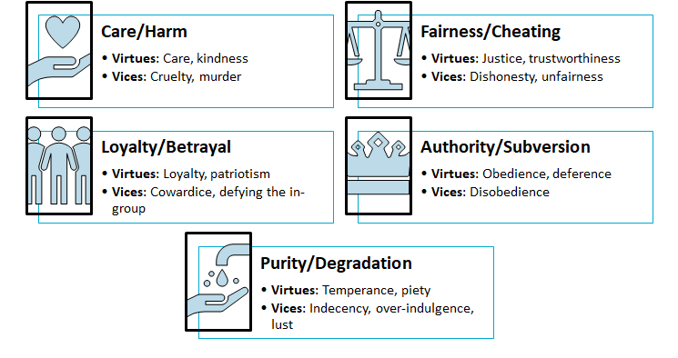

![]()
In April 2022, I started a postdoctoral fellowship at CSIRO. My project—titled “Automated monitoring of social change: applications to Social License to Operate in the Blue Economy”—involves developed automated systems to monitor social acceptance of marine projects, science, and governance. To this end, I have applied a number of Natural Language Processing techniques to understand public perceptions and media portrayals. In this post, I will share my experiences of these tools and my findings.

Topic detection
The threat of climate change to the health of Australia’s Great Barrier Reef (GBR) is undisputed. However, news reporting about the GBR in recent years has sometimes failed to accurately convey the risks to the GBR of a heating climate, fuelling discourses of climate change denial on social media. One such instance occurred in 2022, in which a media release by an Australian government research agency about the state of coral cover growth on the GBR led to inaccurate news reporting, and a spike in online climate science denial in the days following its release.
Typically social science approaches could be used to understand the media coverage, of 28 articles. However, the social media commentary could not be handled manually, wherein 59,586 tweets were shared within four weeks of the GBR news. Instead, I relied on a Natural Language Processing technique called topic modelling to identify the main themes in the social media commentary.
The goal of topic modelling is to identify topics, which are coherent collections of words that capture an abstract concept. Although a variety of topic modelling techniques, often the exercise involves estimate topic-word distributions (ideally, a small set of words have a high association with a topic) and topic-document distributions (documents can consist of multiple topics). Typically, a researcher will need to specify the number of topics, which requires some trial-and-error. For this case, fourteen topics work best. Then, for each topic, we manually explored whether these topics related to coral coverage, and if so, we then determined whether the topic related to climate change scepticism. You can read more about our work in our preprint, titled “Steering Great Barrier Reef climate science narratives through the mediasphere in a time of misinformation”.

Sentiment analysis
My colleagues were interested in monitoring newspaper articles, in order to build a digital twin of conflict. Previously, they have used manual coding to discern media sentiment, which can be time-consuming and expensive. So, we teamed up to explore the use of Natural Language Processing techniques to automate this process.
For the social scientist, there are a few ‘out-of-the-box’ tools available. Very generally, we can consider two kinds of tools. The first ‘out-of-the-box’ tool are rules-based tools that rely on a pre-defined dictionary (list of words) of positive or negative sentiment. To a degree, some further rules can be added, such as reversal of sentiment when a negation is present (but this detection too, may be rules-based). The second ‘out-of-the-box’ tools are machine learning tools trained on a large corpus of text. Previously, machine learning tools were relatively inaccessible to social scientists, due to a lack of technical knowledge of machine learning techniques. Now, social scientists can interact with machine learning tools through user-friendly interfaces, such as ChatGPT’s interface for Generative pre-trained transformer (GPT) models.
But should they?
The performance of text-completion models, such as GPT, can be highly variable. The optimistic user might refer to this behaviour as ‘prompt engineering’, which suggests that the user can guide the model to produce the desired output. I am not optimistic in nature, so I was interested in whether deliberate changes to ‘improve’ the prompt (following prompt-engineering advice) would lead to a more accurate sentiment analysis. Generally, I found huge variability in the sentiment analysis. I found that prompts that performed well for one version of GPT (e.g., GPT-3.5-turbo) were not guaranteed to perform well for other versions. In addition, sometimes GPT models were outperformed by more transparent and simple rules-based tools.
In an upcoming paper, I will present my findings in detail and advise social scientists on how best to use these tools.
Moral language classification
“They wanna use the Great Barrier Reef as a rubbish tip! Says everything you need to know about this corrupt government #auspol” - a tweet (paraphrased to protect anonymity)
The above tweet exemplifies moral judgements. These are convictions about what is right/wrong, just/unjust, holy/unholy. Moral judgements are critical to understanding public attitudes towards marine resources and their management. Those who hold moral judgements about a topic can be intolerant to disagreement and harder to persuade. Passionate, or perhaps vitriolic comments, abound on social media, which can be a good source for understanding some of moral perspectives of the public. Fortunately, there is at least a decade of literature that has developed tools to classify moral language.

Psychologists have used Moral Foundation Theory to understand moral judgements as a set of five moral foundations: care, fairness, loyalty, authority, and purity (or sanctity). A social scientist might rely on so-called Moral Foundation Dictionaries—list of words associated with each foundation. More recently, data scientists have developed machine learning tools to classify moral language.
I used these automated tools to explore how climate change contrarians use moral language in their tweets about the GBR. I found that climate change contrarians were more likely than other users discussing climate change and the GBR to: (1) use moral language, and (2) reference vices of cheating and subversion, whereas other users discussing climate change were more likely to discuss the vice of harm (relative to other vices). My findings suggest the language of climate change contrarians is underscored by a unique moral signature, which could be useful for identifying and countering dis/misinformation.
I presented my findings at a workshop in the University in Melbourne—titled “Detecting and responding to moralised misinformation”—for academics and industry interested in understanding misinformation.
Conclusion
If you are interested in learning more about my work, or collaborating, please feel free to reach out to me.
Reuse
Citation
@online{andreotta2024,
author = {Andreotta, Matthew},
title = {My Postdoctoral Fellowship at {CSIRO}},
date = {2024-08-23},
url = {https://matt-lab.github.io/posts/2024-08-23_postdoc-so-far},
langid = {en}
}